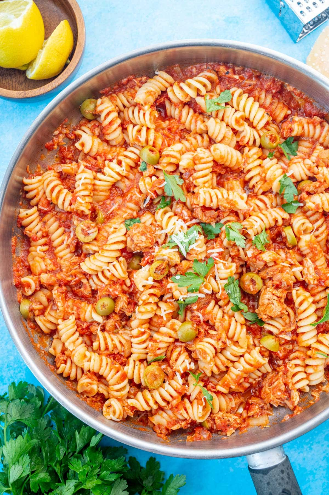

Tuna Pasta

Description
Tuna pasta is such a great dinner to make when you don’t have much in the cupboard.
For canned tuna recipe cynics out there – it’s time to take a leap of faith!
This is seriously tasty, very economical and super fast – it comes together in 15 minutes flat, from start to finish.
Ingredients
Canned tuna
Mayonnaise
Cheese
Pasta
Olives
Steps
1. Cook the pasta in salted water per packet directions minus 1 minute. The pasta will be slightly under al dente (ie underdone) but that’s ok.
The pasta will finish cooking with the sauce, during which time it will absorb the tasty flavours of the sauce!
2. Reserve pasta cooking water – Just before draining, scoop out 1 cup of cooking water then drain the pasta.
Why? Because we will be using this to make the sauce for the pasta.
The starch in the pasta cooking water will react with the oil in the sauce to make it thicken so it clings to the pasta strands instead of remaining
as a watery sauce at the bottom of the pan.
3. Tuna oil – Pour the oil from the tuna can(s) into the same pot and heat over medium heat.
4. Sauté garlic, anchovies and chilli flakes for 1 minute.
5. Pasta and water – Add the pasta, capers and 1/3 cup of reserved pasta water. Toss using 2 spatulas for 2 minutes. During this step, the oil and the starchy pasta cooking water will thicken into a sauce that clings to the pasta. Also during this step the pasta will finish cooking from just under al dente to al dente. If the pasta is still too firm for your taste, add more of the pasta cooking water and keep cooking the pasta.
6. Add tuna – Turn off the heat. Add tuna, parsley, lemon zest, juice, salt and pepper. Toss gently so the tuna stays in chunks and doesn’t crumble into tiny little bits.
Then serve immediately!